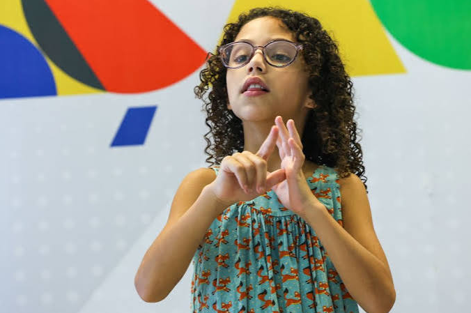

INCLUSÃO • ACESSIBILIDADE • SOLIDARIEDADE
Comunicar é um direito de todos.
Aprender Libras é um passo importante para construir uma sociedade mais inclusiva, especialmente em momentos de crise socioeconômica.
Descubra por quêINCLUSÃO • ACESSIBILIDADE • SOLIDARIEDADE
Aprender Libras é um passo importante para construir uma sociedade mais inclusiva, especialmente em momentos de crise socioeconômica.
Descubra por quêPOR QUE APRENDER?
A Libras é a língua utilizada por muitas pessoas surdas no Brasil. Conhecê-la favorece a comunicação, o respeito à diversidade linguística e a participação social.
Facilita a interação entre pessoas surdas e ouvintes e contribui para diminuir barreiras de comunicação.
Pode melhorar a comunicação em entrevistas, ambientes profissionais e serviços de emprego.

Ajuda no acolhimento e na comunicação em serviços de saúde, assistência social e situações emergenciais.
UM DESAFIO COLETIVO
Em períodos de desemprego, aumento da pobreza ou emergências, o acesso à informação e aos serviços essenciais torna-se ainda mais importante.
A comunicação acessível pode facilitar o acesso de pessoas surdas a orientações profissionais, entrevistas e oportunidades de capacitação.
O conhecimento de Libras pode ajudar no acolhimento e na compreensão de orientações, sem substituir intérpretes qualificados.
Informações sobre abrigos, benefícios sociais e emergências precisam ser acessíveis também às pessoas surdas.
“A acessibilidade é um elemento essencial para a participação plena das pessoas com deficiência na sociedade.” — Princípio de inclusão social
NA PRÁTICA
Veja exemplos de situações em que a comunicação acessível pode contribuir para o atendimento e a inclusão.
| Situação | Barreira possível | Como ajudar |
|---|---|---|
| Busca por emprego | Entrevistas sem comunicação acessível | Aprender sinais básicos e oferecer recursos acessíveis |
| Atendimento de saúde | Dificuldade para compreender orientações | Disponibilizar intérpretes e atendimento adequado |
| Emergências | Alertas e instruções inacessíveis | Utilizar comunicação visual e recursos em Libras |
| Assistência social | Dificuldade para obter informações sobre benefícios | Oferecer atendimento e materiais acessíveis |
A seguir, uma breve reportagem da TV Brasil, na visitação de uma escola que tem Libras como segunda língua.
COMECE HOJE
Comece com cumprimentos, apresentações pessoais, alfabeto manual e expressões cotidianas.
Procure cursos, materiais educativos e conteúdos produzidos por pessoas surdas e profissionais da área.
Aprenda continuamente, respeite a comunidade surda e não presuma que todas as pessoas surdas utilizam Libras.
Consulte o portal do Governo Federal para conhecer informações sobre direitos e inclusão de pessoas com deficiência.
Acessar o portal de Direitos Humanos ↗FAÇA PARTE DA MUDANÇA
Preencha o formulário para refletir sobre como você pode contribuir com a inclusão por meio da Libras.